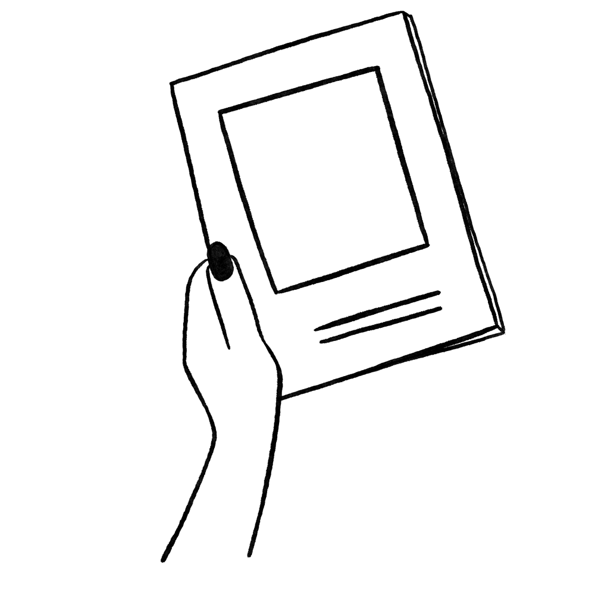

Here are some steps to help you organize a reading group:
Create a judgement-free space
The foundation of a reading group is a supportive and inclusive environment. Ensure that everyone feels comfortable participating irrespective of their levels of understanding or experience with feminist topics. You can create ground rules that encourage respect, confidentiality and openness in all conversations and facilitate learning and mutual support. The actual location of the reading group is also important! Consider hosting meetings in community spaces or venues run by women, where the members can feel comfortable and supported. If the meetings are held virtually, ensure that everyone has necessary tools to access the platform and it is user-friendly.
Make it accessible
When it comes to accessing books or media, financial concerns may be a barrier for people. You can use open-sourced resources and free-material available on the internet. You can even start here. Having rules that are flexible will also help- members don’t need to complete the reading to participate in the discussion. The point is to encourage dialogue, reflection and connection.
Choose Inclusive and Diverse Material
The goal is to foster inclusivity where people can relate to or learn from the material, and challenge their own perspectives. It doesn’t have to be traditional books- your reading list could include anything from essays, articles, podcasts, documentaries or movies that offer valuable perspectives. You can encourage members to suggest readings for future discussions, and empower them to host discussions.
Using Current Events to navigate Discussion
A way to keep discussions relevant and engaging is to tie your reading material to current events. Using real-world events as a backdrop for discussions can help ground the conversations in practical, lived experiences, while also giving members a chance to relate the ideas they are talking about to today’s issues.
Facilitate and Communicate
Facilitation is key to a reading group! If you are moderating, it might help to prepare a range of questions beforehand- the questions could be very open-ended like “What stood out to you in this reading?” or “How does this connect to something that is happening in the world today?” which help people think and critically reflect on the material. However, allow the discussion to flow naturally and tangentially, it doesn’t all have to be about the material. Additionally, the conversation doesn’t have to end with the reading group meeting- consider creating online spaces to keep the discussion going. Platforms like Discord or WhatsApp are tools that allow members to share ideas, articles and reflections between meetings and have a consistent channel of communication.
Think Logistics
Think about how big you want your group to be? That can help you decide your venue for the meetups. Is this something that you would want to advertise on social media? You can consider setting up an email-chain or an instagram account. This will help new members start a conversation and help them redirect to your reading group. Pick a day of the month which is convenient for all the members, and a time of the day that works for everyone. This might be a good thing to discuss on the first day of your reading group.
Ultimately, the goal of a reading group is to empower participants by fostering education, solidarity and critical thinking. This is an opportunity to build a community and a space where people are connecting and supporting each other, having their voices be heard and learning from a diverse range of experience.Each conversation is a small step in the larger process of social change.
BACK TO TOP
POLITICAL EDUCATION

Start a Reading Group
